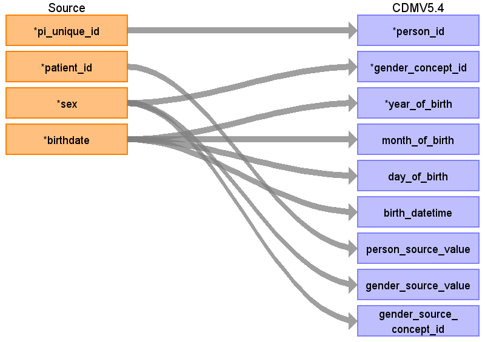
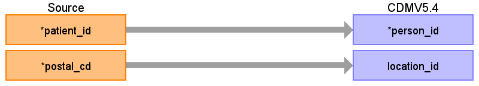

ターゲットテーブル:person
・当テーブルはPatientIdentification、PatientAddress、および郵便番号マスタを患者IDをキーに結合したデータをもとに生成する
本項では、PatientIdentificationをもとに生成された、personテーブルの各項目のとの出力結果の対応を記載する。

| Destination Field | Source field | Logic | Comment field |
|---|---|---|---|
| person_id | pi_unique_id | SSMIX標準DBにオリジナルの患者IDとは別に施設ごとのユニークIDが採番されているので、それを利用 |
|
| gender_concept_id | sex | CASE
WHEN gender_source_value = 'M' THEN 8507 WHEN gender_source_value = 'F' THEN 8532 ELSE 0 END AS gender_concept_id |
固定変換
F：8532 M：8507 |
| year_of_birth | birthdate | EXTRACT(YEAR FROM sch_birthdate) | 生年月日の年を登録 |
| month_of_birth | birthdate | EXTRACT(MONTH FROM sch_birthdate) | 生年月日の月を登録 |
| day_of_birth | birthdate | EXTRACT(DAY FROM sch_birthdate) | 生年月日の日を登録 |
| birth_datetime | birthdate | 生年月日を登録 |
|
| race_concept_id | 0 固定 | ||
| ethnicity_concept_id | 0 固定 | ||
| location_id | |||
| provider_id | 設定しない | ||
| care_site_id | care_siteに医療機関番号を登録し、そのcare_site_idを登録する
（施設ごとのETLではその施設固定値となるが、医科と歯科で医療機関番号異なる場合は考慮が必要） |
||
| person_source_value | patient_id | PATIENT_IDをそのまま登録する |
|
| gender_source_value | sex | 性別をそのまま登録する（男性、女性以外の性別が登録されている場合もそのまま） |
|
| gender_source_concept_id | sex | CASE
WHEN gender_source_value = 'M' THEN 8507 WHEN gender_source_value = 'F' THEN 8532 ELSE 0 END AS gender_concept_id |
固定変換
F：8532 M：8507 |
| race_source_value | SSMIX標準DBにカラムはあるがデータはないので対象外とする | ||
| race_source_concept_id | 設定しない | ||
| ethnicity_source_value | SSMIX標準DBにカラムはあるがデータはないので対象外とする | ||
| ethnicity_source_concept_id | 設定しない |
本項では、PatientAddressをもとに生成された、personテーブルの各項目のとの出力結果の対応を記載する。
・PatientAddressは１つのPATIEND_IDで複数のレコードを保持する場合があるため、もっとも直近の住所レコードを採用する
・PatientAddressが保持する郵便番号から都道府県番号に変換し、locationと紐づけを行う

| Destination Field | Source field | Logic | Comment field |
|---|---|---|---|
| person_id | patient_id | SSMIX標準DBにオリジナルの患者IDとは別に施設ごとのユニークIDが採番されているので、それを利用 |
|
| gender_concept_id | |||
| year_of_birth | |||
| month_of_birth | |||
| day_of_birth | |||
| birth_datetime | |||
| race_concept_id | 0 固定 | ||
| ethnicity_concept_id | 0 固定 | ||
| location_id | postal_cd | 郵便番号から郵便番号マスタを介して都道府県名を取得後、location_idに変換 |
|
| provider_id | 設定しない | ||
| care_site_id | care_siteに医療機関番号を登録し、そのcare_site_idを登録する
（施設ごとのETLではその施設固定値となるが、医科と歯科で医療機関番号異なる場合は考慮が必要） |
||
| person_source_value | |||
| gender_source_value | |||
| gender_source_concept_id | |||
| race_source_value | SSMIX標準DBにカラムはあるがデータはないので対象外とする | ||
| race_source_concept_id | 設定しない | ||
| ethnicity_source_value | SSMIX標準DBにカラムはあるがデータはないので対象外とする | ||
| ethnicity_source_concept_id | 設定しない |